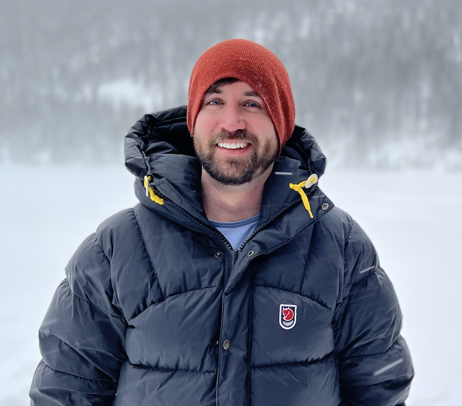

I'm Chase. I help founders go from zero to one: the messy first product, the first ten customers, the first version of the team.
I've built seven products from zero to one: twice as a founder, three times early at startups, twice inside Dropbox and Walmart's incubators.
I'm best in the fog: the part where the product is half-built, the customer isn't sure what they want, and the team is figuring out who does what. The first ugly version is my favorite version.
When I'm not building, I'm somewhere above 10,000 feet.

[ PORTRAIT — REPLACE ]Most "0 to 1" is actually "negative one to zero": figuring out what to even build. I run small, fast cycles with real users until the product earns its right to exist.
Acquisition is a craft, not a channel. I've built distribution from cold DMs to paid loops to founder-led sales. Whatever the first ten need, that's what we do.
Knowing who to hire first, what to outsource, and what the founder must hold. I've made every staffing mistake; you don't have to.
The first dating app with a feedback loop.
Dating products optimize for swipes; we optimize for second dates. Every match generates a small loop of post-date feedback the matching engine, and you, actually learn from. We're seeing a 15× second-date rate compared to major dating apps.
Launched in two cities: Denver and New York. We're a team of five learning what kind of feedback people are willing to give about a near-stranger, and how fast that signal compounds.
Chase joined WorkMade during a complex early stage with a lot of moving parts. He jumped in, adapted fast, and kept the team calm when things got hectic. He connected dots across the full customer journey and built narratives that held up in front of the board. I'd fight to work with him again.
Chase joined during a critical period and rebuilt our product team from the ground up. He brought insight our business genuinely needed and set a new standard for execution across the org. The turnaround was real and measurable.
Chase is sharp, thorough, and data driven. He distills complex issues to their core, then builds and executes against them. He's a proactive self starter who leans in and gets ahead of problems before they surface. He's helped us clarify positioning, org, design, marketing, and value prop.
Let's plan the route.
Tell me a bit about you and I'll send investor materials directly.